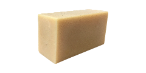
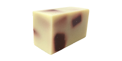

[ 手工皂系列 ]

寵物寶貝皂
成分：
椰子油、棕櫚油、冷壓初榨橄欖油、箟麻油、山茶花油、茶樹精油、氫氧化鈉、水

薏仁綠茶清爽皂
成分：
椰子油、棕櫚油、冷壓出榨橄欖油、乳油木果脂、快樂鼠尾草精油、檸檬精油、薏仁粉、綠茶粉、氫氧化鈉、水
馬鞭草紓壓皂
成分：
椰子油、棕櫚油、冷壓出榨橄欖油、杏桃核仁油、乳油木果脂、抹草粉、艾草粉、左手香泥、抹草萃取液、艾草萃取液、薄荷精油、氫氧化鈉、水

茉莉潔淨皂
成分：
椰子油、棕櫚油、冷壓出榨橄欖油、乳油木果脂、澳洲胡桃油、可可脂、小麥胚芽油、薰衣草精油、茉莉花粉、氫氧化鈉、水

檸檬香茅皂
成分：
椰子油、棕櫚油、冷壓出榨橄欖油、乳油木果脂、榛果油、香茅粉、檸檬香茅精油、綠色珠光粉、氫氧化鈉、水
玫瑰保濕皂
成分：
椰子油、棕櫚油、冷壓出榨橄欖油、乳油木果脂、葡萄籽油、玫瑰粉、玫瑰天竺葵精油、氫氧化鈉、玫瑰露

紫草潤膚皂
成分：
椰子油、棕櫚油、紫草浸泡油、澳洲胡桃油、榛果油、山雞椒精油、苦澄葉精油、紫草粉、氫氧化鈉、水

抹草平安皂
成分：
椰子油、棕櫚油、冷壓出榨橄欖油、杏桃核仁油、乳油木果脂、抹草粉、艾草粉、左手香泥、抹草萃取液、艾草萃取液、薄荷精油、氫氧化鈉、水